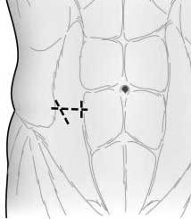
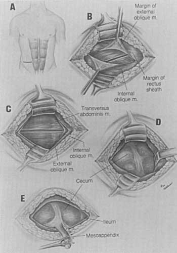
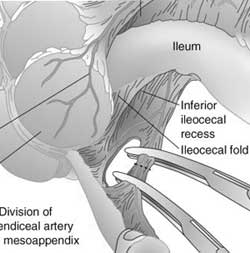
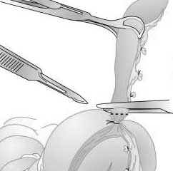
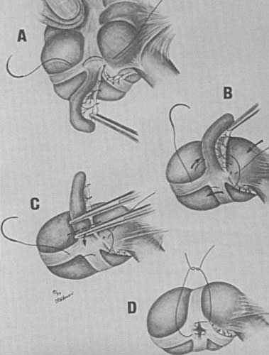
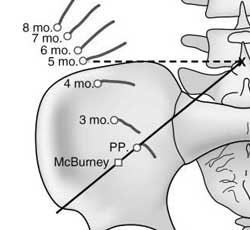

Appendicectomy
:
Open
GA, pt supine, bladder empty.
Prep abdomen, drape taking into account changes in plan eg lap
--> open.
Palpate RIF for mass.
Conventional Technique
Small Lanz incision (5-7cm) in skin crease.
~1-3cm below umbilicus, centred on midclavicular line.

Knick aponeurosis of external oblique in course of fibres with
scalpel
- then divide in course of fibres with curved metzenbaums running
slightly open.
Separate EO with Langenbecks.
Separate Int oblique with Langenbecks
Separated transversus
Lift peritoneum and cut horizontal.

Find appendix.
- follow tineae, esp tinea libera.
- remember it is just below ileocaecal jx.
- put finger deep in lateral IF, until reached, then gently push out
to surface
- sometimes caecum is high, under R lobe of liver.
Deliver appendix into wound by rotation of caecum, holding teniae
with Babcock's.
- usually possible;
- if difficult to access tip, resect in a retrograde manner.
- never pull on it if stuck: it will tear; rather go retrograde +/-
improve view.
- may need to mobilize from adjacent structures by gently peeling
them away with a finger.
Make window at base of mesoappendix.
- identify where the artery is lying.

- clamp across vessels, ligate with tie.
- if thickened, take it in 2 bites.
Apply crushing clamp to appendix base.
Then move a little distal with crushers.
Place ligature in first crush groove.
- ligation & inversion have same complication rates.
Remove appendix.

I don't bury the stump.
Sometimes will need a Z-stitch or purse-stringe if base of appendix
questionable.

If appendicitis not found:
Investigation for other causes.
- ?carcinoid at tip (yellowish swelling)
- ?peritoneal fluid / exudate.
- examine pelvic organs & bladder as possible.
- examine gbladder & gastroduodenum.
- examine mesentry for nodes (take 2 if enlarged, culture &
histo)
- run 1.5m of small bowel in retrograde fashion for enteritis /
Meckel's.
- remove appendix anyway because they have an appendicectomy scar
now.
Free perforation:
- irrigate thoroughly.
- drains not recommended
- can drain superficial wound if desired; but easier to open if
inflamed.
Do or don't close peritoneum, often easier to do
so to hold bowel out way.
Close ext oblique aponeurosis - this is where strength of wound
comes from.
Abscess found.
Gently and thoroughly clean out pus and debris.
Explore cavity with finger: can it be enlarged or are viscera at
risk.
- the appendix may be seen and safely removed.
- if not found, or if unsafe, wash and leave a drain in-situ
Gangrene spreads to caecal wall.
Apply a non-crushing clamp gently across bowel to limit
contamination.
Resect to healthy wall.
Close with a double-layered suture line 4-0 maxon or similar.
If cannot close, insert an inflated foley into caecum and bring
and stich to skin as a caecostomy.
- usually closes in a few days when removed.
Crohn's disease, appendix not
clearly involved.
Do nothing
because
you do not want a fistula.
What it the patient is pregnant; where is the appendix?

At least this is the classical explanation.
A contrasting view says that in reality the ascending colon is fixed
/ retroperitoneal.
- therefore advised that you make the cut just slightly high in all
cases.
It is, however, pushed laterally, so make the cut more lateral that
usual.
Complications
5% unperforated.
30% perforated.
Wound infection, intra-abdo abscess, fecal fistula, obstruction.
Wound infection
Anaerobic bacteroides, aerobic klebsiella, enterobacter and e. coli
most commonly.
Open skin and subcut tissue early if pain / oedema / other signs.
- pack with saline-soaked gauze.
- can close with steri-strips 4-5d later.
Abscesses
Pelvic, sub-phrenic, other sites.
Often subtle / insidious.
- malaise, fever, nausea.
- rectal ?boggyness and pain.
Drain operatively or percutaneously.
Pylephlebitis
Portal pyemia. Jaundice, fevers, septic.
Serious; leads to multiple liver abscesses; usually E. coli based.
Rare with routine antibiotic use.
Bowel obstruction
Rare but possible.
Requires operative therapy.
Fistula
Rare with modern
management but possible.